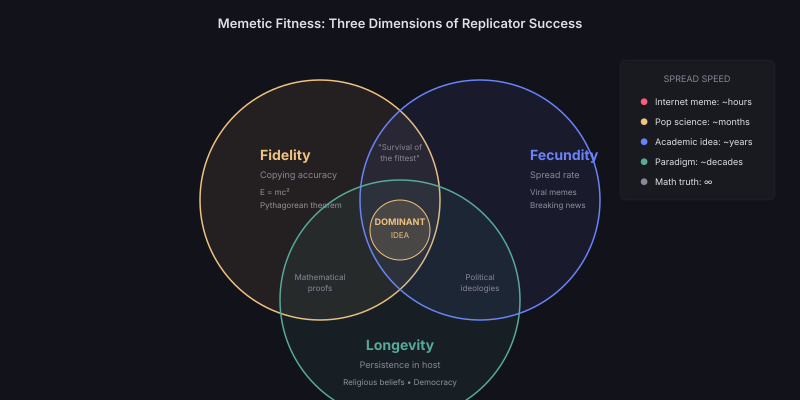

Ideas as Replicators
In 1976, Richard Dawkins proposed a radical reframing: ideas are not passive objects held by minds — they are active replicators that use minds as hosts. Just as genes "want" to replicate (in the metaphorical sense of selection pressure), memes compete for the scarce resource of human attention and memory.
This inversion of perspective is powerful. Instead of asking "why did this person adopt this idea?" we ask "what properties make this idea good at getting itself adopted?" The focus shifts from the consumer to the replicator.
The Meme Defined
A meme is any unit of cultural information that can be transmitted from one mind to another through imitation, teaching, or communication. This includes:
Concepts — "natural selection," "supply and demand," "the unconscious"
Phrases — "survival of the fittest," "paradigm shift," "black swan"
Techniques — double-entry bookkeeping, the scientific method, agile development
Frameworks — Maslow's hierarchy, the Lean Startup, object-oriented programming
Each of these is a discrete unit that replicates across minds — sometimes with high fidelity, sometimes mutating along the way.

The Three Dimensions of Memetic Fitness
Ideas that score high on all three dimensions — copying accuracy, spread rate, and persistence — achieve dominance. The intersection zone produces ideas like major religions, fundamental equations, and the scientific method itself. Each dimension alone produces a different type of cultural artefact.
The Three Properties of Successful Replicators
Fidelity, Fecundity, Longevity
Dawkins identified three properties that determine a replicator's evolutionary success. These apply to memes just as they apply to genes:
1. Fidelity (Copying Accuracy)
Can the idea be transmitted without corruption?
Ideas with high fidelity survive transmission intact. They are clear enough that misunderstanding is rare, simple enough to remember accurately, and distinct enough to avoid confusion with similar ideas.
High fidelity: E = mc² — a formula so compact it cannot be misremembered.
Low fidelity: "Quantum mechanics says observation affects reality" — gets mutated into mysticism within one generation of retelling.
Think of fidelity like photocopying. An idea with high fidelity is like a bold, high-contrast original — even after 100 copies of copies, the text remains legible. A low-fidelity idea is like a pencil sketch — after three copies, it's unrecognisable. The ideas that survive centuries are the ones that can be told and retold without losing their essence.
2. Fecundity (Spread Rate)
How quickly does each carrier transmit the idea?
Fecund ideas are those that their carriers feel compelled to share. They may be surprising, useful, emotionally charged, or status-conferring — any property that motivates retransmission.
High fecundity: "Did you know honey never spoils?" — surprising, shareable, makes the sharer seem interesting.
Low fecundity: A correct but dull statistical observation — technically valuable but generates no impulse to share.
3. Longevity (Persistence)
How long does the idea survive in each host?
Longevity determines how long a carrier remains "infectious" — continuing to transmit the idea over time. Ideas that become part of someone's identity (religious beliefs, political ideologies, professional paradigms) have extreme longevity compared to fleeting trends.
High longevity: "Democracy is the best form of government" — once adopted, rarely abandoned; transmitted throughout a lifetime.
Low longevity: A trending hashtag — intense spread for hours, then forgotten completely.
Memetic Fitness Landscape
What Makes an Idea "Fit"?
Beyond the three replicator properties, memetic fitness is determined by how well an idea fits its environment — the current state of human attention, needs, and existing beliefs. Key fitness factors:
Emotional resonance — ideas that trigger fear, hope, outrage, or wonder spread faster than neutral ones.
Utility — ideas that help people solve immediate problems get adopted and retained.
Status signalling — ideas that make their carriers appear intelligent, moral, or sophisticated spread through social competition.
Narrative compatibility — ideas that fit existing worldviews face less resistance than those requiring belief revision.
Compressibility — ideas expressible in a short phrase or formula spread faster than those requiring lengthy explanation.
The Selfish Meme Problem
When Fitness ≠ Truth
A critical insight from memetics: an idea's replicative fitness is independent of its truth value. False ideas can be supremely fit replicators if they are emotionally compelling, simple to transmit, and identity-forming.
This explains why:
• Conspiracy theories spread faster than corrections
• Simplified slogans outcompete nuanced analysis
• "Survival of the fittest" (misleading) spread further than Darwin's actual mechanism (accurate but complex)
• E = mc² is universally known while the full field equations of general relativity are known only to physicists
The relationship between memetic fitness and truth is like the relationship between a song's catchiness and its musical sophistication. A three-chord pop hook with a simple melody can achieve a billion streams while a harmonically complex jazz composition remains niche. The hook isn't better music — it's just better at getting stuck in your head. Ideas face the same trade-off: optimising for spread often means sacrificing nuance.
Case Study: "Survival of the Fittest"
The Meme That Outcompeted Its Creator
Darwin's original phrase was "natural selection" — accurate but clinical. Herbert Spencer coined "survival of the fittest" as a summary. Darwin initially resisted it but eventually adopted it in later editions of On the Origin of Species.
Why did Spencer's phrase win?
Higher fidelity — four common English words, impossible to misremember.
Higher fecundity — dramatic, implies a contest, invites application to human society.
Higher longevity — becomes part of common parlance, used in contexts far beyond biology.
The trade-off: the phrase implies competition is the primary mechanism and that "fitness" means strength — both misleading. The meme succeeded because it was wrong in a compelling way.
Meme Complexes (Memeplexes)
Ideas That Travel Together
Just as genes form co-adapted complexes, memes form memeplexes — groups of ideas that reinforce each other and spread as a unit. A memeplex is harder to dislodge than a single meme because removing one component leaves the others to reconstruct it.
Examples of powerful memeplexes:
The scientific method: observation + hypothesis + experiment + peer review + replication — each component reinforces the others.
Agile development: sprints + standups + user stories + retrospectives + continuous deployment — removing any one element weakens but doesn't destroy the complex.
Democratic capitalism: property rights + free markets + voting + free press + rule of law — a memeplex so entangled that challenging one component triggers defence of the entire system.
The Digital Mutation Rate
How the Internet Changed Memetic Evolution
Before the internet, ideas mutated slowly — through misremembering, translation, and reinterpretation over decades. Digital networks introduced:
Perfect-fidelity copying — exact text, code, and images replicate without degradation.
Intentional mutation — remix culture deliberately creates variants (forks, memes, hot takes).
Rapid selection cycles — ideas that don't spread within hours are buried by algorithmic timelines.
Global population size — the "population" of hosts went from thousands (academic community) to billions (internet users).
The result: memetic evolution now operates at a speed that was previously impossible. Ideas that took decades to spread through academic networks can now achieve global saturation in days.
The Attention Economy as Selection Pressure
Finite Minds, Infinite Ideas
Human attention is the ultimate scarce resource for memes. Each person can hold only a few hundred active concepts in working memory and actively engage with perhaps a dozen ideas at any time.
As the total number of ideas in circulation increases exponentially (more papers, more code, more content), the selection pressure intensifies. Only the most fit memes survive — and "fitness" increasingly means "ability to capture attention quickly" rather than "truth" or "depth."
The Memetic Singularity
If memetic evolution is accelerating — with faster transmission, larger populations, and more intense selection — we may be approaching a point where the rate of idea evolution exceeds the rate at which individual humans can track it.
At this point, ideas would effectively evolve "above" human comprehension, selected not by individual understanding but by aggregate network behaviour. AI systems might become the primary hosts and selectors of ideas, with humans relegated to observers of a memetic process they no longer fully control.
This would be the true "singularity of ideas" — the point where intellectual evolution decouples from individual human cognition.
This is speculative extrapolation. Current evidence shows acceleration but not decoupling. The hypothesis requires that AI systems can genuinely select for idea quality rather than merely amplifying existing human preferences — which remains unproven.
Open Questions
- Is there a fundamental trade-off between memetic fitness and truth — or can we design ideas that are both true and fit?
- Do memeplexes have emergent properties that individual memes lack — can a complex of mediocre ideas outcompete a single brilliant one?
- As AI generates more ideas faster than humans can evaluate them, does memetic selection shift from human attention to algorithmic filtering?
- Is the "dumbing down" of ideas (losing nuance for spreadability) reversible, or is it an evolutionary ratchet?
- Can we measure the "mutation rate" of scientific ideas and determine whether it's accelerating?